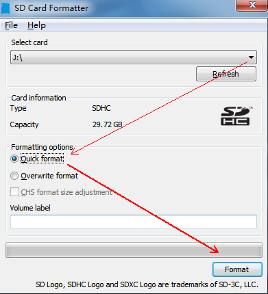
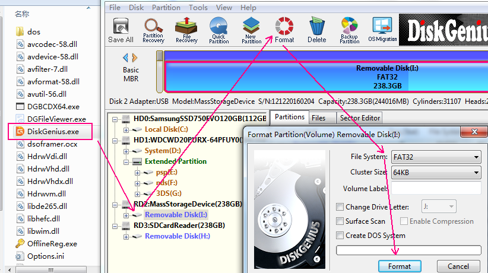
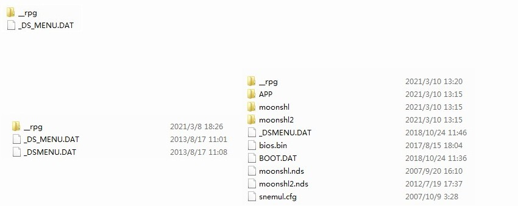
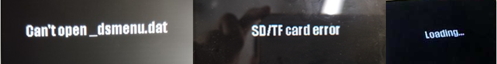

|
||||||||


Q1: How to use this R4?
Answer:
Support all models including NDS Original, NDS Lite, NDSi / NDSi XL / NDSi LL to the latest system, 2DS / New 2DSXL / 3DS / 3DS XL LL / New 3DS / NEW 3DS XL LL to the latest system. 16 languages can be set, support 512GTF/micro sd card, if it exceeds 32G, it must be formatted as FAT32 with DISKGEN.
Before using our R4 card, take the TF/Micro sd card format according to the following step, it will guarantee TF/Microsd card perfectly compatible in the process of using.
If you don't format the TF/Micro sd card according to this step, it maybe appear below problems
1.it will appear black or white screen when you load the kernel
2.When you run, it will slow down
For avoiding and solving above problems, Please run the TF/Micro sd card format the special tools "SDFormatter", according to the below step，It is recommended not to use extension cords and front-end USB operations. Unstable voltage on certain interfaces will destroy data.

Choose "Quick format" , click "Format", waiting for complete.Formatting tools download link: SDCardFormatterv5
For the TF / MICRO SD card that does not exceed 32G, the kernel system files can be copied after formatting with the above software. For large-capacity 64G 128G 256G 512G TF / MICRO SD card, in addition to the above formatting software, you must use DISKGEN to format it into FAT32.

Download diskgen software here.DiskGenius
If your computer cannot open this software, please go to the Internet to search for a version suitable for your computer system.
Then download our latest super integrated simulator and multiple skin kernels, High-speed multi-language kernel and then copy a bunch of files from the computer to the TF root directory. If it is a multifunctional integrated version of the kernel. There will be more documents. According to different core files, each set of files must be located in the root directory.

After copying files from tf/micro sd. Insert the R4 card. Insert the machine and click the new icon on the desktop to enter. If there is no icon, it is generally because the tf/micro SD is not inserted well or some old host card slots are not flexible enough. We use The special method is to push the gold finger part of the R4 card PCB to the contact surface of the host card slot to solve it. Contact your dealer for the operation method. The problem of no icon is more common in silver and black cards. If your R4 card also has this problem. The solution is the same!

After clicking the icon, it prompts that open_dsmenu.dat cannot be opened, indicating that the system files have not been copied, please refer to the above copy again; if it prompts SD/TF card error or loading.. please re-insert or use SDFormatter to format FAT32 and copy the system kernel correctly.
If the tf/micro sd card data is garbled, use the computer's built-in scan and repair function to copy the usable data to the computer and back it up, and then reformat the memory card to copy the system kernel file.
The last case. Click the icon to enter, and then a black screen appears. Usually, there is a problem with the A9 and B9S systems and you need to upgrade LUMA. If the screen is still black after the upgrade, you need to install five CIA black screen patches. Please contact your dealer for processing.
The above is the general solution to the problem. The efficiency is 99.9%. If it doesn't work, it is recommended that you change the machine and try it.
Answer:
★Our WOOD system R4 card has a long history. You can find our white card series issued every year from 2011 to now. Now. To commemorate the release of the dual-core system, a series of PLUS color cards have been launched with the favorite colors of consumers.
★ we upgrading the two different WOOD kernel. function is more powerful than before. Built-in 16 languages. The download area has an upgraded version of the kernel and a multi-functional kernel selection.
★The high-density integrated dual-core chip makes it run faster, more stable, and more power-saving.
★Fully support 3DS 2DS NEW 3DS NEW 2DS LL XL DSL / DSi / LL / XL all system versions.
★ There is no time bomb in the kernel. It will never expire. DLDI automatic repair support cheating
★No upper limit on the number of files. File name is too long there is no problem.The archive is stable, no matter how many filers there are, ther will not be lost.
★Support SDHC TF (Micro SD 4G, 8G, 16G, 32G, 64G, 128G, 256G, 512g) .
★You can create multiple folders to store files, and it will jump to this folder after reset. If you have more than 500 files in the root directory, you will not be able to access it. If you have 5000 files, please create more than 10 folders to store.
★Using a MicroSD card, formatted as FAT16 or FAT32, the brand card will be best.
★Support any MicroSD card speed and run fast. No lag.
★Support Clean ROM, drag and drop. Suitable for any operating system
★Files can be copied, pasted, cut, deleted and other operations. The UI is powerful.
★Built-in NoPass automatically detects the save type
★The archive is saved directly to the MicroSD card instead of the onboard chip, which is convenient for copying and saving on the computer.
★Support Moonshell player reading, etc., as well as various simulators and other homemade software. If your card capacity exceeds 32G, please try a different moonshell version.
★Humanized and changeable interface. Touch screen or button operation.
★Support WiFi , Rumble Pak, Browser.
★Support to change the background of the operation interface.
★Automatically set the background and font colors of the main menu and menus manually, and support skin DIY.
★Support 4-level brightness adjustment (DS Lite only).
★Support soft reset and press the start key to set different combinations.
|